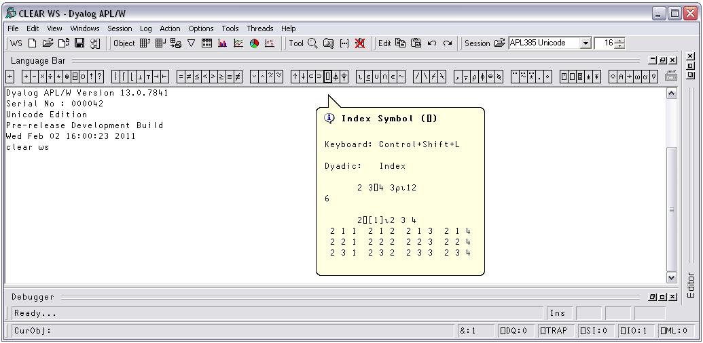

The session contains the input line and the session log. The input line is the last line in the session, and is (normally) the line into which you type an expression to be evaluated.
The session log is a history of previously entered expressions and the results they produced.
If you are using a log file, the Session log is loaded into memory when APL is started from the file specified by the log_file parameter. When you close your APL session, the Session log is written back out to the log file, replacing its previous contents.
In general you type an expression into the input line, then press Enter (ER) to run it. After execution, the expression and any displayed results become part of the session log.
You can move around in the session using the scrollbar, the cursor keys, and the PgUp and PgDn keys. In addition, Ctrl+Home (UL) moves the cursor to the beginning of the top-line in the Log and Ctrl+End (DL) moves the cursor to the end of the last (i.e. the current) line in the session log. Home (LL) and End (RL) move the cursor to the beginning and end respectively of the line containing the cursor.
The Language Bar is an optional window which is initially docked to the Session Window, to make it easy to pick APL symbols without using the keyboard.
If you hover the mouse pointer over a symbol in the APL Language Bar, a pop-up tip is displayed to remind you of its usage. If you click on a symbol in the Language Bar, that symbol is inserted at the cursor in the current line in the Session.

As you start to enter characters in an APL expression, the Auto Complete suggestions pop-up window (AC for short) offers you a choice based upon the characters you have already entered and the current context.
For example, if you enter a ⎕, AC displays a list of all the system functions and variables. If you then enter the character r, the list shrinks to those system functions and variables beginning with the letter r, namely ⎕refs, ⎕rl, and ⎕rtl. Instead of entering the remaining characters, you may select the appropriate choice in the AC list. This is done by pressing the right cursor key or (in PocketAPL) by tapping the choice in the list.
If you begin to enter a name, AC will display a list of namespaces, variables, functions, operators that are defined in the current namespace. If you are editing a function, AC will also include names that are localised in the function header.
If the current space is a GUI namespace, the list will also include Properties, Events and Methods exposed by that object.
As an additional refinement, AC remembers a certain number of previous auto complete operations, and uses this information to highlight the most recent choice you made.
For example, suppose that you enter the two characters )c. AC offers you )clear thru' )cs, and you choose )cs from the list. The next time you enter the two characters )c, AC displays the same list of choices, but this time )cs is pre-selected.
You can disable or customise Auto Completion from the Auto Complete page in the Configuration dialog box which is described later in this chapter.
To execute an expression, you type it into the input line, then press Enter (ER). Alternatively, you can select Execute from the Action menu. Following execution, the expression and any displayed results become part of the session log.
Instead of entering a new expression in the input line, you can move back through the session log and re-execute a previous expression (or line of a result) by simply pointing at it with the cursor and pressing Enter. Alternatively, you can select Execute from the Action menu. You may alter the line before executing it. If you do so, it will be displayed using colour 249 (Red on White), the same as that used for the input line. When you press Enter the new line is copied to the input line prior to being executed. The original line is restored and redisplayed in the normal session log colour 250 (Black on White).
An alternative way to retrieve a previously entered expression is to use Ctrl+Shift+Bksp (BK) and Ctrl+Shift+Enter (FD). These commands cycle backwards and forwards through the input history, successively copying previously entered expressions over the current line. When you reach the expression you want, simply press Enter to re-run it. These operations may also be performed from the Edit menu in the session window.
You can execute several expressions, by changing more than one line in the session log before pressing Enter. Each line that you change will be displayed using colour 249 (Red on White). When you press Enter, these marked lines are copied down and executed in the order they appear in the log.
Note that you don't actually have to change a line to mark it for re-execution; you can mark it by overtyping a character with the same character, or by deleting a leading space for instance.
It is also possible to execute a contiguous block of lines. To do this, you must first select the lines (by dragging the mouse or using the keyboard) and then copy them into the clipboard using Shift+Delete (CT) or Ctrl+Insert (CP). You then paste them back into the session using Shift+Insert (PT). Lines pasted into the session are always marked (Red on White) and will therefore be executed when you press Enter. To execute lines from an edit window, you use a similar procedure. First select the lines you want to execute, then cut or copy the selection to the clipboard. Then move to the session window and paste them in, then press Enter to execute them.
Throughout its history, APL has used a system variable ⎕PW to specify the width of the user's terminal or screen. Session output that is longer than ⎕PW is automatically wrapped and split into multiple lines on the display. This feature of APL was designed in the days of hard-copy terminals and has become less relevant in modern Windows environments.
Dyalog APL continues to support the traditional use of ⎕PW, but also provides an alternative option to have the system wrap Session output according to the width of the Session Window. This behaviour may be selected by checking the Auto PW checkbox in the Session tab of the Configuration dialog box.
The search and replace facilities work not just in the Editor as you would expect, but also in the Session. For example, if you have just entered a series of expressions involving a variable called SALES and you want to perform the same calculations using NEWSALES, the following commands will achieve it:
Enter SALES in the Find box, and NEWSALES in the Replace box. Now click the Replace All button. You will see all occurrences of SALES change to NEWSALES. Furthermore, each changed line in the session becomes marked (Red on White). Now click on the session and press Enter (or select Execute from the Action menu).
Once displayed, the Find or Find/Replace dialog box remains on the screen until it is either closed or replaced by the other. This is particularly convenient if the same operations are to be performed over and over again, and/or in several windows. Find and Find/Replace operations are effective in the window that previously had the focus.